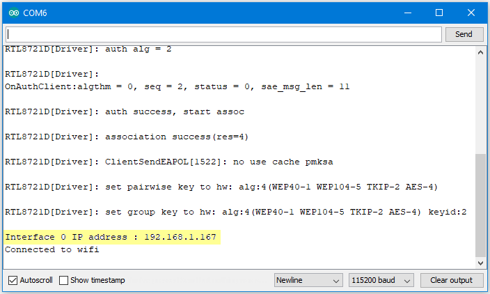
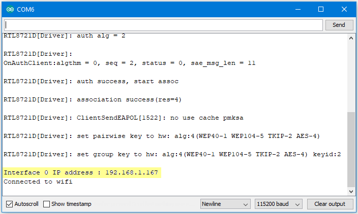

[RTL8722CSM] [RTL8722DM] Approximate UDP Receive Delay¶
Materials
Ameba x 1
Windows computer connected to same network
Example
This example uses Ameba to receive UDP packets from a computer and
calculates the UDP receive delay. Ameba Preparation Open the
“CalculateUdpReceiveDelay” example in “File” -> “Examples” ->
“AmebaWiFi” -> “UDP_Calculation” -> “CalculateUdpReceiveDelay”. In
the sample code, modify the highlighted section to enter the information
required (ssid, password, key index) to connect to your WiFi
network.
In
the sample code, modify the highlighted section to enter the information
required (ssid, password, key index) to connect to your WiFi
network. Upload the code and press the reset button on Ameba
once the upload is finished. Open the serial monitor in Arduino IDE and
take note of the IP address assigned to Ameba.Computer
Preparation On the computer, Cygwin will be required to compile the
code to send the UDP packets. Cygwin can be downloaded
from https://www.cygwin.com/ Follow the instructions there to install
it. Next, from the “CalculateUdpReceiveDelay” Arduino example, copy the
code from the bottom between “#if 0” and “#endif”, into a new text file,
change the hostname to the IP address assigned to Ameba, and rename the
file to “UdpReceiveDelay.cpp”.
Upload the code and press the reset button on Ameba
once the upload is finished. Open the serial monitor in Arduino IDE and
take note of the IP address assigned to Ameba.Computer
Preparation On the computer, Cygwin will be required to compile the
code to send the UDP packets. Cygwin can be downloaded
from https://www.cygwin.com/ Follow the instructions there to install
it. Next, from the “CalculateUdpReceiveDelay” Arduino example, copy the
code from the bottom between “#if 0” and “#endif”, into a new text file,
change the hostname to the IP address assigned to Ameba, and rename the
file to “UdpReceiveDelay.cpp”. Next, open a Cygwin terminal,
change the working directory to the location of “UdpReceiveDelay.cpp”,
and use the command “g++ UdpReceiveDelay.cpp -o UdpDelay” to compile the
code. A file named “UdpDelay.exe” will be created in the same
directory. Running the Example Reset the Ameba, wait for the WiFi to
connect, and check that the IP address remains the same. On the
computer, run the UdpDelay.exe file, and the computer will begin to send
packets to Ameba. Once 10000 packets have been received, Ameba will
calculate the average delay and print out the result to the serial
monitor. It may take up to a few minutes for 10000 packets to be
sent.
Next, open a Cygwin terminal,
change the working directory to the location of “UdpReceiveDelay.cpp”,
and use the command “g++ UdpReceiveDelay.cpp -o UdpDelay” to compile the
code. A file named “UdpDelay.exe” will be created in the same
directory. Running the Example Reset the Ameba, wait for the WiFi to
connect, and check that the IP address remains the same. On the
computer, run the UdpDelay.exe file, and the computer will begin to send
packets to Ameba. Once 10000 packets have been received, Ameba will
calculate the average delay and print out the result to the serial
monitor. It may take up to a few minutes for 10000 packets to be
sent.
{kind=link}